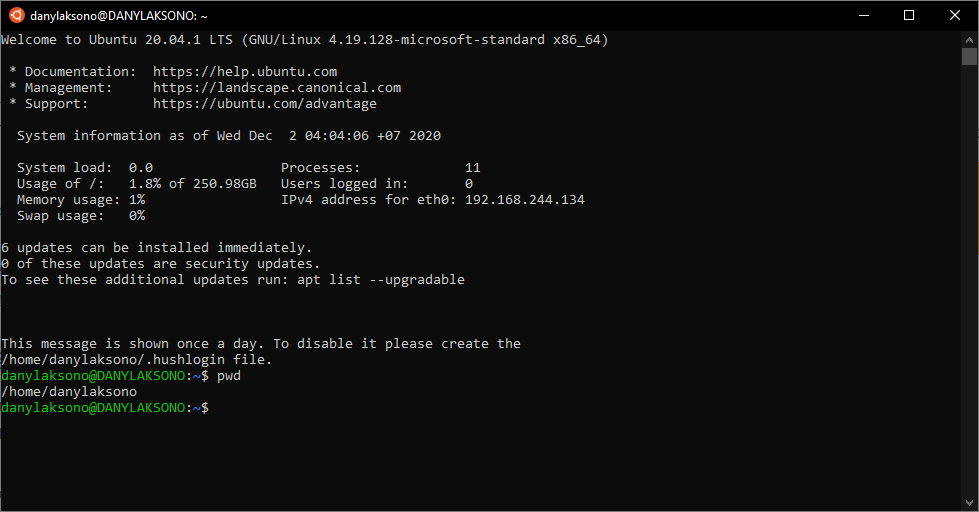
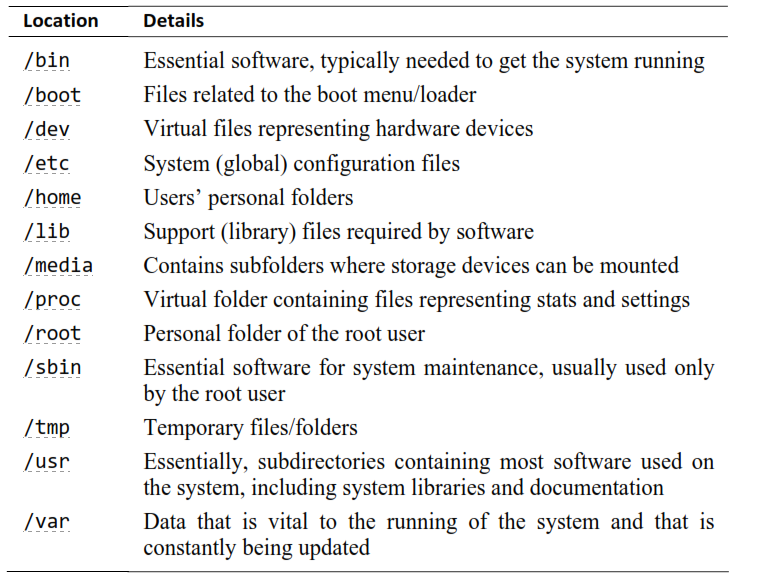
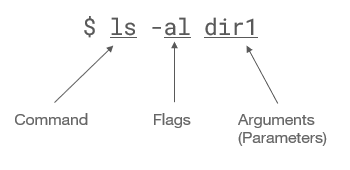
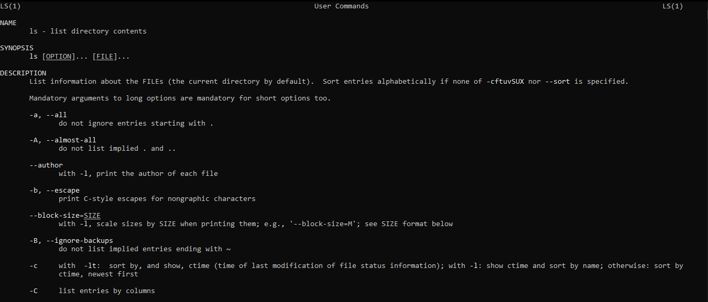
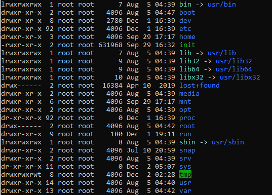
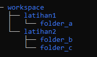
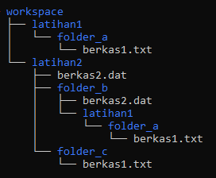
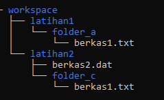
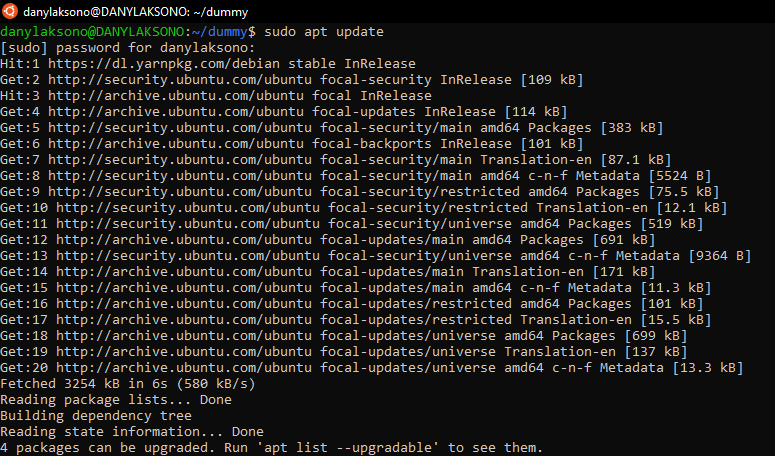
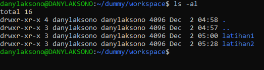

Pengaturan dan Administrasi Linux¶
Setelah memiliki sebuah sistem operasi Linux yang dapat digunakan untuk latihan dengan menggunakan WSL, pada bagian ini akan dibahas mengenai beberapa perintah dasar pada Linux.
Catatan
Ubuntu Pocket Guide merupakan panduan yang cukup komprehensive untuk ‘penggunaan Ubuntu sehari-hari’. Buku ini dapat diunduh secara gratis dari alamat: http://www.ubuntupocketguide.com/download_main.html
Arsitektur Linux¶
Sebelum terjun langsung dalam penggunaan Linux, sebaiknya terlebih dahulu dipelajari mengenai filosofi dan arsitektur sebuah sistem operasi Linux. Pemahaman mengenai hal ini akan memudahkan dalam bekerja dengan Linux serta menghindari permasalahan pada saat bekerja dengan Linux.
Kernel dan komponen-komponen Linux¶
Sebelumnya, kernel linux telah disebutkan beberapa kali pada panduan ini. Lisensi kernel Linux yang dikembangkan oleh Linus Torvalds sebagai rangkaian kode yang bersifat bebas dan terbuka memungkinkan pengembangan berbagai aplikasi lain di atasnya, yang kemudian melahirkan ratusan distro yang masing-masingnya adalah sebuah sistem operasi sendiri. Tetapi, apa sebenarnya yang dimaksud dengan Linux Kernel?

Fig. 6 Arsitektur Sistem Operasi Linux¶
Sebuah ‘kernel’ dapat diartikan sebagai potongan kode yang menjadi antarmuka antara perangkat keras (hardware) dan berbagai aplikasi yang menggunakan perangkat tersebut. Linux Kernel yang awalnya didesain oleh Linus Torvalds sebagai sebuah sistem yang tertutup dan tidak portabel ternyata berubah menjadi kode yang dapat digunakan pada berbagai platform dengan dukungan pada berbagai perangkat keras, sehingga muncul berbagai pengembangan versi distribusi Linux yang berbeda.
Filosofi Linux¶
Di atas kernel inilah berbagai aplikasi berdiri sebagai perantara antara perangkat keras dan perangkat lunak pada sebuah sistem operasi. Filosofi Linux ini kemudian dikenal luas dengan istilah, “Everything is a File”: setiap transaksi, proses, dan apapun yang terjadi pada sebuah sistem Unix sejatinya adalah ‘stream of byte’ yang berdiri di atas kernel.
Fig. 7 Komponen-komponen Linux¶
Jika Kernel digunakan untuk berkomunikasi dengan perangkat keras, maka sebuah Shell pada Linux berfungsi sebagai penghubung antara pengguna dan kernel. Shell dapat menerima berbagai perintah pengguna dan menerjemahkannya menjadi perintah yang dapat dipahami oleh perangkat keras. Berbagai aplikasi juga menggunakan shell untuk melakukan operasi-operasi yang diinginkan pengguna, misalnya pada antarmuka desktop. Karena setiap operasi adalah ‘file’, maka pengguna yang berbeda dapat melakukan operasi yang berbeda pada sebuah berkas yang sama. Pada Linux, kondisi berikut berlaku:
Tiap program dijalankan oleh user/pengguna
Tiap berkas dimiliki oleh pengguna
Tiap pengguna memiliki identitas unik yang membedakan pengguna satu dengan yang lain
Dari uraian di atas, dapat disimpulkan bahwa beberapa karakteristik dari Linux adalah sebagai berikut 1:
Portabel - Portabilitas berarti perangkat lunak dapat bekerja pada berbagai jenis perangkat keras dengan cara yang sama. Kernel Linux dan program aplikasi mendukung instalasi mereka pada semua jenis platform perangkat keras.
Open Source - Kode sumber Linux tersedia secara gratis dan merupakan proyek pengembangan berbasis komunitas. Beberapa tim bekerja sama untuk meningkatkan kemampuan sistem operasi Linux dan pengembangannya terus berjalan.
Multi-User - Linux adalah sistem multiuser yang berarti banyak pengguna dapat mengakses sumber daya sistem seperti memori / ram / program aplikasi pada saat yang bersamaan.
Multiprogramming - Linux adalah sistem multiprogramming yang berarti banyak aplikasi dapat berjalan pada waktu yang bersamaan.
Sistem File Hirarkis - Linux menyediakan struktur file standar di mana file sistem / file pengguna disusun dengan struktur yang sama pada berbagai distribusi Linux.
Shell - Linux menyediakan program penerjemah khusus yang dapat digunakan untuk menjalankan perintah sistem operasi. Dapat digunakan untuk melakukan berbagai jenis operasi, memanggil program aplikasi. dll.
Keamanan - Linux menyediakan keamanan pengguna menggunakan fitur otentikasi seperti proteksi password dan akses terkontrol ke file/enkripsi data tertentu.
Mengunakan Shell¶
Shell Command merupakan antarmuka untuk melakukan berbagai operasi pada sistem operasi Linux. Meskipun saat ini berbagai Distro Linux telah dilengkapi dengan antarmuka yang sangat canggih, penggunaan Shell untuk operasi sehari-hari memiliki beberapa kelebihan:
Perintah yang kompleks dapat dilakukan dengan mudah menggunakan Shell (coba:
cal)Shell diperlukan pada saat menggunakan Linux sebagai mesin server: perintah shell jauh lebih cepat dan menggunakan bandwith lebih sedikit apabila koneksi dilakukan dengan shell
Shell dapat diprogram (contoh:
for i in *.png do ...)Penggunaan Shell memungkinkan kustomisasi, misalnya dengan menggunakan argumen untuk berbagai perintah (contoh: pipe operation)
Pada bagian ini akan dilakukan beberapa latihan untuk mengenal perintah-perintah shell pada Linux. Perintah-perintah pada panduan ini dilakukan pada Ubuntu, sehingga penggunaan distro yang lain mungkin memerlukan penyesuaian. Meskipun sebagian besar perintah antar distro Linux yang satu dengan yang lain sama, tetapi boleh jadi ada sedikit perbedaan (sebagai contoh, Ubuntu yang berbasis Debian menggunakan Package Manager apt, sedangkan CentOS yang berbasis RedHat menggunakan yum).
Catatan
Bash Shell adalah aplikasi Command Shell yang saat ini merupakan aplikasi standar pada hampir semua distribusi Linux, sehingga perintah pada panduan ini mengacu pada Bash Shell. Perintah-perintah pada Bash Shell dapat dilihat pada link berikut atau link berikut.
Latihan: Perintah Dasar pada Shell¶
WSL2 untuk Windows 10 yang diinstall pada latihan sebelumnya memberikan antarmuka Shell pada pengguna (lihat gambar sebelumnya). Latihan-latihan berikut menggunakan antarmuka shell command yang diberikan oleh WSL2 ini.
Berikut adalah beberapa perintah yang dapat digunakan untuk berlatih manajemen file pada Linux:
Command |
Deskripsi |
|---|---|
man |
bring up manual for a command |
exit |
log out of shell |
clear |
clears all output from console |
date |
output the system date |
cal |
output a text calendar |
uname |
print information about the current system |
Untuk latihan, buka konsol Ubuntu WSL2, kemudian ketikkan salah satu perintah di atas:

Perintah pwd pada gambar di atas digunakan untuk menampilkan direktori tempat shell saat ini berjalan. Keluaran dari perintah ini langsung ditampilkan pada konsol. Untuk latihan, jalankan perintah-perintah lain dan perhatikan apa yang terjadi pada konsol.
Latihan: Operasi pada File dan Direktori¶
Sebagaimana pada Windows, berkas pada Linux disusun dalam beberapa folder yang masing-masing mengatur pekerjaan tertentu. Pada Linux, struktur direktorinya adalah sebagai berikut:

Perintah pada Shell umumnya mengikuti struktur sebagai berikut:

Command adalah perintah yang dipanggil pada shell. Flags menunjukkan opsi yang dapat dipanggil oleh command tersebut, sedangkan Argument menyatakan variabel yang dipanggil oleh perintah tersebut.
Untuk berpindah antar satu direktori ke direktori lain, dapat digunakan Relative Directory, dimana struktur direktori dapat diakses secara hirarkis.
Command
Deskripsi
.
direktory saat ini
..
direktory yang berada satu tingkat di atas direktori saat ini
~
home directory untuk pengguna saat ini
/
root directory
/apt
folder apt pada root
Selanjutnya, perintah-perintah berikut dapat digunakan pada saat berhubungan dengan pengaturan direktori:
Command
Deskripsi
ls
tampilkan daftar berkas pada direktori saat ini
pwd
print working directory - cetak direktori saat ini
cd
change directory - berpindah ke direktori baru
mkdir
membuat direktori baru
rmdir
menghapus direktori (isi folder harus kosong)
rm
hapus file atau direktori (
rm -rfuntuk menghapus secara paksa)Gunakan perintah
man <namaperintah>ataunamaperintah --helpuntuk menampilkan opsi apa saja yang dapat digunakan pada tiap perintah tersebut. Sebagai contoh berikut adalah manual page untuk perintahls: Untuk latihan selanjutnya, tampilkan isi dari root directory (satu tingkat di atas
home directory), seperti berikut: Selanjutnya, buatlah struktur folder berikut pada
home directoryAnda (pengguna aktif saat ini): Buat folder
workspaceyang didalamnya berisi dua buah folder, masing-masing folderlatihan1danlatihan2. Di dalam folderlatihan1berisi sebuah folder lain.Catatan
Berbagai perintah pada shell Linux sangat efektif apabila digunakan dengan baik. Perintah yang berbeda dapat dikombinasikan dan dioptimalkan untuk mempersingkat tugas-tugas yang diberikan. Sebagai contoh, beberapa perintah dapat menerima lebih dari satu argumen (misalnya,
mkdir folder1 folder2). Penggunaan operator pada command juga dapat menyingkat operasi yang diinginkan (misalnya,sudo apt update && sudo apt updatedengan operatorAND_IF), operasi ekspansi dengan bracket (misalnyacp /alamat/file.txt{,.bak})Sebagai catatan tambahan, Shell pada Linux bahkan mendukung Regex!
Untuk bekerja dengan file, beberapa perintah berikut dapat digunakan:
Command
Deskripsi
cp
copy a file
mv
move a file (also used to rename files)
rm
remove the given file
touch
create empty file, or change time-modified
Gunakan perintah di atas untuk membuat file
berkas1.txtpadafolder_adi dalam folderlatihan1. Selanjutnya, lakukan perintah copy dan rename untuk menghasilkan struktur file seperti berikut:
untuk melakukan editing pada file, kebanyakan distro Linux menyediakan shell editor bawaan, misalnya
nano.Terakhir, hapus folder_b berikut semua file dan sub-direktori di dalamnya. Hasil akhirnya sebagai berikut:

Dengan demikian, latihan ini menunjukkan bagaimana manajemen terhadap file dilakukan di Linux. Berbagai perintah dapat digabungkan untuk memperoleh hasil yang diinginkan, misalnya membuat beberapa folder baru sekaligus atau membuat dan mengcopy berkas secara cepat.
Latihan: Instalasi aplikasi¶
Ubuntu menggunakan APT (Advanced Package Tool) sebagai package manager untuk mengatur seluruh aplikasi yang digunakan. Sebuah Package manager menghubungkan antara Repository dan mesin linux yang kita gunakan. Repositori Linux merupakan lokasi penyimpanan tempat sistem Anda mengambil dan menginstal pembaruan dan aplikasi OS. Setiap repositori adalah kumpulan perangkat lunak yang disimpan pada server jarak jauh dan digunakan untuk menginstal dan memperbarui paket perangkat lunak pada sistem Linux.

Fig. 8 Cara kerja Package Manager pada Linux¶
Pada pemanggilan berkas yang tersimpan di repository, berlaku kondisi sebagaimana akses informasi melalui internet pada umumnya: semakin jauh secara fisik lokasi server, semakin lambat koneksi yang akan diperoleh. Untuk itu, terdapat sejumlah repository lokal untuk tiap versi distribusi Linux. Sebagai contoh, http://repo.ugm.ac.id/ berisi repository untuk beberapa distribusi Linux yang disimpan pada server UGM.
Terdapat beberapa antarmuka yang berhubungan dengan Package Manager yang dikenal di sistem operasi berbasis Debian, seperti apt-get, aptitude, maupun apt. Aplikasi antarmuka ini menghubungkan perintah dari pengguna (misalnya sudo apt update) dengan package manager (seperti APT) untuk kemudian melakukan operasi terkait dengan basisdata aplikasi pada repository.
Latihan berikut diberikan untuk memahamkan bagaimana menggunakan apt untuk memanajemen aplikasi pada Linux 2.
Melakukan update basisdata APT Pada Ubuntu dan distro berbasis Debian lainnya, aplikasi yang terinstall disimpan pada basisdata. Untuk melakukan update atau pembaruan aplikasi dari repository, gunakan perintah:
sudo apt update
keluaran perintah tersebut adalah seperti berikut:

Hasil dari
apt updateadalah daftar aplikasi yang dapat diperbarui. Untuk mengeksekusi pembaruan aplikasi, gunakan perintah:sudo apt upgrade
Kedua perintah di atas dapat diringkas menggunakan
&&:sudo apt update && sudo apt upgradeCaution
Upgrade adalah hak sudoers. Apa yang terjadi jika perintah di atas dijalankan tanpa
sudo?aptdapat digunakan untuk melakukan instalasi paket aplikasi. sebagai contoh, perintah berikut akan menginstall aplikasitree:sudo apt install tree
selanjutnya, perintah
treedapat langsung digunakan pada shell.
Untuk menghapus aplikasi, gunakan perintah:
sudo apt purge <nama aplikasi>
atau
sudo apt remove <nama aplikasi>
perbedaan keduanya terletak pada kedalaman penghapusan.
purgemenghapus seluruh aplikasi berikut konfigurasi yang tersimpan, sedangkanremovehanya menghapus aplikasi dari daftar basisdata APT, tetapi meninggalkan konfigurasi dari aplikasi, sehingga apabila kelak dilakukan instalasi kembali, konfigurasi ini akan digunakan.
Sebagai latihan, lakukan instalasi untuk aplikasi editing bernama
vim. vim dapat digunakan untuk mengedit sebuah file yang memiliki tingkat kompleksitas tinggi, dan akan membantu pada saat kita melakukan editing file, misalnya pada sebuah mesin server.
Pengaturan Pengguna dan Hak Akses¶
Sebagaimana disebutkan, Linux merupakan sistem operasi MultiUser dan Multiprogramming, dimana tiap berkas dimiliki oleh seorang pengguna, dan tiap pengguna memiliki hak akses tertentu. Sudoers merupakan kelas pengguna yang memiliki hak akses lebih tinggi (elevated) dibandingkan pengguna biasa, sehingga mampu melakukan berbagai perintah yang tidak diizinkan untuk pengguna yang tidak termasuk dalam grup 27 (sudo), misalnya apt upgrade.
Fig. 9 Sumber: https://xkcd.com/149/¶
Beberapa perintah terkait user pada Linux adalah sebagai berikut:
Command |
Deskripsi |
|---|---|
whoami |
print your username |
id |
print user id and group membership |
users |
list logged-in users (short) |
who |
list logged-in users (long) |
finger |
print information about users |
Latihan: Administrasi Pengguna¶
Latihan berikut akan memberikan gambaran mengenai pengaturan pengguna dan hak akses pada berkas atau direktori 3.
Membuat user baru Akun pengguna baru dapat digunakan pada sebuah sistem Enterprise, dimana satu sistem operasi yang sama digunakan oleh beberapa pengguna yang berbeda. untuk menambahkan pengguna baru, gunakan perintah berikut:
sudo adduser namauser
Setelah user baru dibuat, kita akan diminta untuk memasukkan nama pengguna dan password, serta beberapa informasi lainnya.
Merubah password Setelah membuat akun, langkah selanjutnya adalah merubah password untuk akun tersebut:
sudo passwd namauser
Latihan: Pengaturan Grup¶
Grup pada Linux dapat digunakan untuk mendefinisikan peranan yang berbeda untuk tiap pengguna, misalnya membatasi akses pada direktori serta akses untuk perintah tertentu. Untuk memasukkan pengguna yang sudah dibuat pada sebuah grup, perintahnya adalah sebagai berikut:
Menambahkan pengguna ke grup
sudo usermod –a –G namagrup namauser
Jika grup yang dimaksud adalah sudoer, maka perintahnya adalah sebagai berikut:
usermod -aG sudo namauser
Selanjutnya, lakukan penambahan akses pengguna ini ke dalam sudoer:
sudo visudo
masukkan informasi nama user sebagai sudoer
namauser ALL=(ALL) NOPASSWD:ALL
Berpindah akun (switch user) Untuk keperluan administrasi, seringkali pengguna harus berpindah dari satu akun (non-sudoer) ke akun lain (sudoer). untuk itu, perintah berikut dapat digunakan:
su –u userkedua whoami
untuk mengakses superelevated user atau root, perintah berikut dapat digunakan:
sudo su whoami
Grup dapat digunakan untuk mengatur dan mengelompokkan pengguna pada satu hak akses yang sama. Selanjutnya adalah bagaimana melakukan pengaturan hak akses tersebut.
Pengaturan Hak Akses¶
Sebagaimana disebutkan sebelumnya, akses terhadap file dan perintah pada Linux dapat dibatasi untuk user tertentu. Izin (Permission) ini pada linux dibagi menjadi:
owner (u) - user yang membuat file. ini dapat dirubah menggunakan perintah
chowngroup (g) - grup yang berhubungan dengan tiap file
others (o) - orang lain yang bukan owner maupun anggota grup yang dapat mengakses file tersebut (‘=semua orang’)
Sebagai contoh, jika kita menggunakan perintah ls -al berikut:

akan muncul keterangan (drwxr-xr-x) mengenai status dan hak akses pada file tersebut, yaitu:
d : menunjukkan bahwa berkas tersebut adalah sebuah
directoryrwx : permission (izin) yang diberikan pada pemilik file untuk read, write dan ex*ecute
r-x : izin grup, pengguna dari grup
danylaksono(kebetulan untuk contoh di atas nama pengguna dan grup sama) dapat melakukan read dan execute pada file tersebutr-x : izin untuk other, atau pengguna lain
{kind=link}
Penulisan izin tersebut juga dapat dilakukan menggunakan notasi numerik:
0: Tidak ada izin
1: Jalankan (x)
2: Tulis (w)
4: Baca (r)
Sekarang, bagaimana cara menghitung izin untuk pengguna dan grup dalam notasi numerik? Cukup tambahkan nilai izin untuk mendapatkan nilai pengguna, grup, dan izin lainnya masing-masing.
Sebagai contoh:
Izin baca (4), tulis (2) dan jalankan (1): izin rwx diterjemahkan menjadi 7 (4 + 2 + 1)
Izin baca (4) dan tulis (2): izin rw- diterjemahkan menjadi 6 (4 + 2)
Izin tulis (2) dan jalankan (1): izin -wx diterjemahkan menjadi 3 (2 + 1), dan seterusnya.
Warning
Kira-kira apa pengaruh chmod 777?
Dengan menggunakan perintah chmod, izin suatu file dapat dirubah. perintah ini menggunakan notasi:
tanda minus (-), yang berarti “hapus izin ini”
tanda tambah (+), yang berarti “tambahkan izin ini”
tanda sama dengan (=), yang berarti “ubah izin menjadi persis seperti ini”.
Sebagai contoh:
chmod +x latihan.txt
maksudnya adalah memberi izin kepada semua pengguna untuk mengakses file tersebut. Ini sama dengan chmod a+x latihan1.txt, dimana a berarti ‘all’. Hal yang sama berlaku untuk grup (g) dan other (o).
Perintah lain yang berguna untuk merubah kepemilikan berkas pada Linux adalah chown. Format untuk perintah ini adalah:
chown user[:group] namafile
Perintah di atas akan merubah owner untuk file namafile menjadi user pada grup group. Selain file, perintah ini juga dapat digunakan untuk merubah kepemilikan sebuah folder atau direktori. Untuk kasus ini, flag -R berguna untuk merubah kepemilikan sebuah direktori secara rekursif, yaitu sekaligus merubah seluruh subdirektory dan berkas yang ada di dalamnya.
chown -R user[:group] direktori
Sebagai latihan untuk sesi ini, buat user kedua, kemudian rubah akses pada file latihan1.txt yang sudah dibuat sebelumnya agar user lain tidak dapat membaca file tersebut. Apa pengaruhnya apabila user pertama hendak mengakses file tersebut?
Catatan
Penggunaan DAC (Discretionary Access Control) seperti di atas akan lebih baik apabila dilengkapi dengan pengaturan ACL (Access Control List) atau SELinux pada distribusi seperti Centos untuk manajemen berkas pada server.